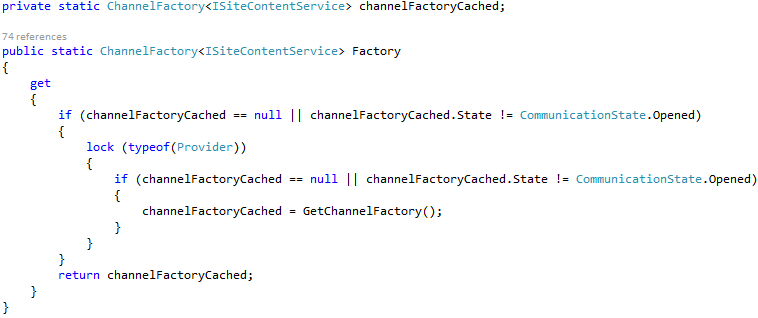
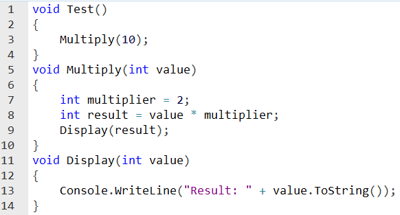
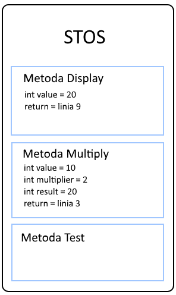
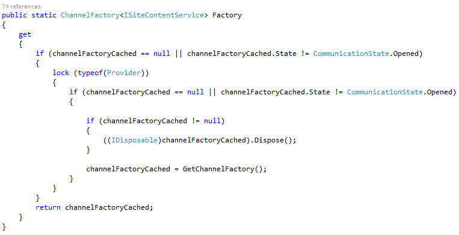

Pamięć w .NET
czyli nie po to kodzę w C# by się tym przejmować
Przejmuje się tym Grzesiek Siemoniak
Grzesiek Siemoniak
programista .NET w PGS Software
Agenda
-
Technikalia
- Stack
- Small Object Heap i Large Object Heap
- Dispose i Finalizer
-
Garbage Collector
- Jak działa?
- Kiedy ruszy?
- Alokacje bez GC?
- Podsumowanie
Impuls

1. Technikalia
Pamięć w .NET
-
Kilka stert
- process heap
- small object heap (SOH)
- large object heap (LOH)
-
loader heap
- high frequency heap
- low frequency heap
- stub heap
-
code heap
- Execution Engine
- JiT
-
czyszczona automatycznie przez Garbage Collector
- small object heap
- large object heap
Stack (stos)
- jeden stos per wątek
- miejsce na zmienne lokalne oraz argumenty funkcji
- wywołanie metody tworzy kontener (tzw. stack frame)
- gdy metoda kończy się, kontener jest usuwany
Stack (stos)
|  |  |
Value Type
- byte, int, long, char, itd.
- struct
- IntPtr
Warto wiedzieć
zmienne statyczne są zawsze umieszczane na stercie, niezależnie od typu
Small Object Heap
- obiekty zawsze umieszczone jeden po drugim
- Next Object Pointer wskazuje na miejsce następnej alokacji
- nowy obiekt trafi zawsze na koniec sterty
- dotychczasowy adres lokalizacji obiektu może ulec zmianie, chyba że został przypięty
Boxing i unboxing
- boxing - ze stosu na stertę, kosztowne, obciąża GC
- unboxing - ze sterty na stos, o wiele tańsze
Warto wiedzieć
- konwersja z value type na interfejs skutkuje boxingiem
- zmienna może być boxowana kilkukrotnie
Large object heap
- obiekty o rozmiarze 85kB i większe
-
istnieje wyjątek
- tablic double ≥ 1000 elementów
- do śledzenia wolnej pamięci służy Free Space Table
-
fragmentowana - po jakimś czasie zawsze będą niezapełnialne "dziury", ale można to zmienić wywołując
GCSettings.LargeObjectHeapCompactionMode = GCLargeObjectHeapCompactionMode.CompactOnce
Dispose
- zwalnia zasoby niezarządzalne
- deterministyczny - zwolnienie następuje w czasie wywołania
Finalizer
- przydatny tylko do zwolnienia niezarządzalnej pamięci
- dodatkowo obciąża Garbage Collectora
- jeśli wystąpi w nim błąd, to cały proces zostanie zakończony
Część 1 podsumowanie
- Stos - zmienne lokalne, krótko żyjące
-
2 sterty:
- small object heap
- large object heap
- zasoby niezarządzalne - pamiętajmy o Dispose
2. Garbage Collector
Garbage Collector - co to
- odpowiedzialny za usuwanie ze sterty obiektów niepotrzebnych
- obiekty dzielone na generacje: gen 0, gen 1 i gen 2
- generacja 0 sprawdzana najczęściej, generacja 2 najrzadziej
- obiekty mogą żyć dłużej niż jest to potrzebne
- LOH sprawdzany tylko podczas czyszczenia generacji 2
- dwa tryby działania
GC - kiedy ruszy
-
kiedy generacja osiągnie rozmiar:
- gen 0 dojdzie do +- 256KB
- gen 1 dojdzie do +- 2MB
- gen 2 dojdzie do +- 10MB
- zostanie wywołane GC.Collect()
- system operacyjny wyśle powiadomienie o niskiej pamięci
Jak działa GC
- Mark - oznaczanie obiektów "żywych"
- Sweep - usunięcie obiektów już niepotrzebnych
- Compact - przesunięcie obiektów w SOH

Sterowanie GC
Latency
- Batch
- LowLatency
- Interactive
- NoGCRegion
- SustainedLowLatency
No GC Region
try
{
GC.TryStartNoGCRegion(TOTAL_SIZE, true);
--reszta kodu
}
finally
{
if (GCSettings.LatencyMode == GCLatencyMode.NoGCRegion) GC.EndNoGCRegion();
} Część 2 podsumowanie
- tylko GC może usunąć "śmieci" z pamięci zarządzalnej
- autonomiczny byt, który odgrywa ważna rolę w naszej aplikacji
- GC jest dobry w tym co robi, ale warto mu tę pracę ułatwić
Szczęśliwy koniec historii?

Szczęśliwy koniec historii!
Nie używajmy zmiennych statycznych tam, gdzie nie jest to potrzebne.
Podsumowanie całości
- alokacje nie są kosztowne
- czy obiekt trafi na SOH, czy LOH ma znaczenie
- pamiętajmy o Dispose
- czyszczenie generacji 0 i 1 jest szybkie
- czyszczenie generacji 2 takie szybkie nie jest, więc nie przedłużajmy życia obiektu, jeśli nie jest to konieczne